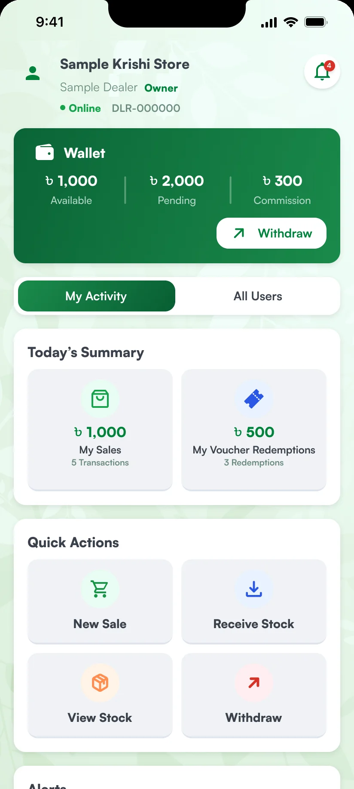
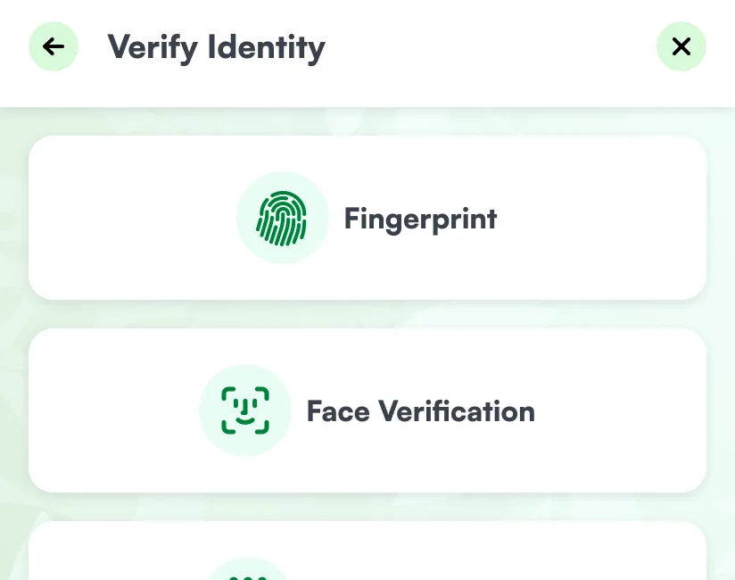
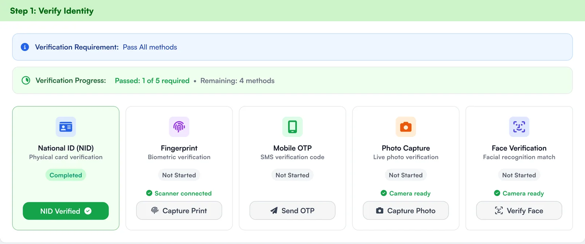
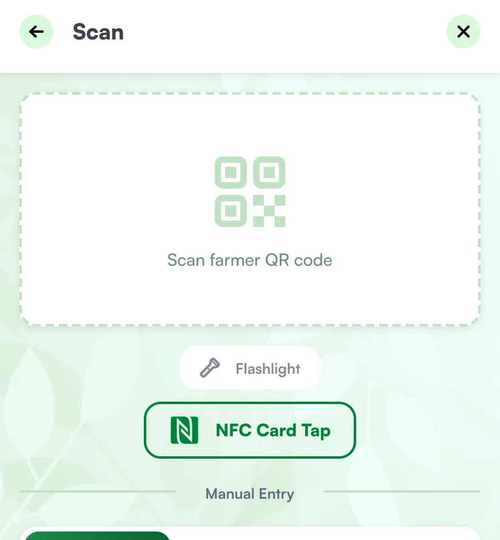
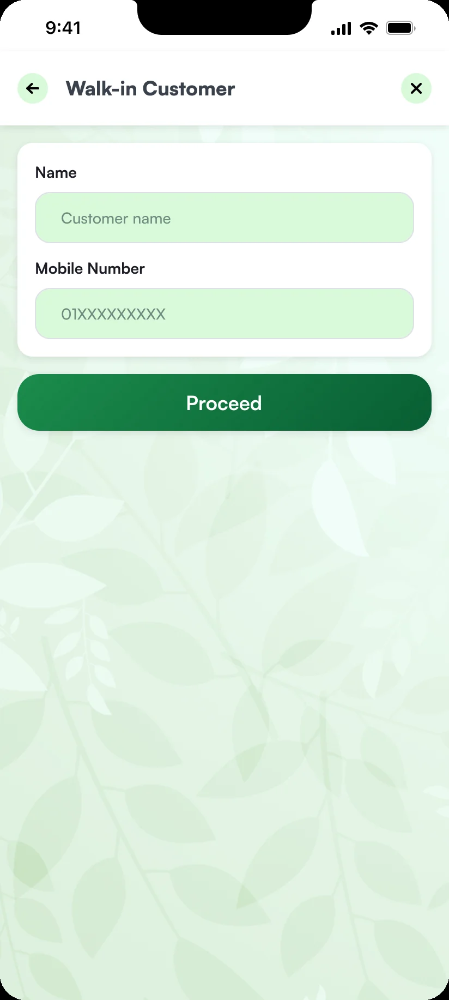
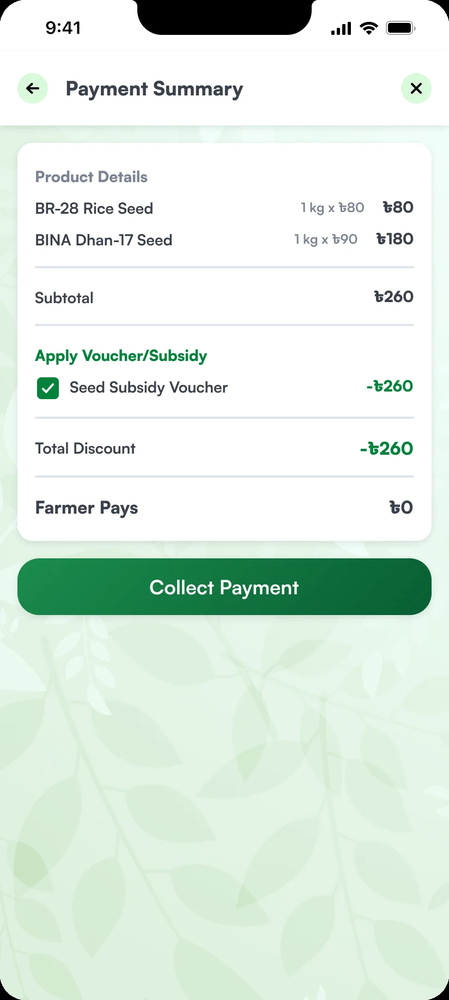
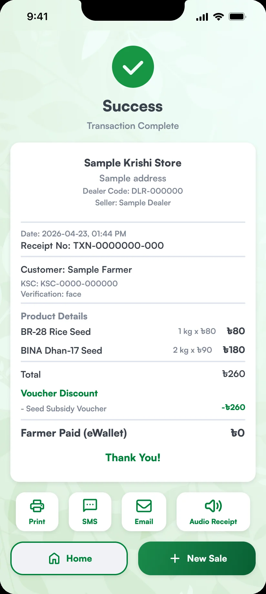

Case study
Farmers Card
Bangladesh's national digital system for farmers' benefits. One record per farmer, three apps, and an identity check at the counter before any voucher is used.
Government support for farmers passes through several hands. It has to reach the farmer in full, without anyone in the middle taking a cut.
 Pridesys IT
Pridesys IT- UI/UX lead
- Sep 2025 to May 2026
- Launched April 2026
- farmerscard.gov.bd
- Farmers in crops, fisheries and livestock, about 16.9 million households
- Dealers who hand out seed and fertiliser
- Officials and staff who register farmers
- Led the UI/UX design across all three apps
- The back office, the dealer app and the farmer app
- One digital record and one card per farmer
- An identity check at the counter
- A receipt the farmer keeps, on paper, by SMS or as audio


Two of the three ends. The dealer app's home screen, and the back office dashboard where officials register farmers and follow each card from print to delivery. Names and figures are samples.
One system, three ends
Farmers Card is the first national digital system of its kind in Bangladesh. The first job was to bring farmers' data into one place, above all to make farmers' lives easier.
Officials and data-entry staff work in the back office: they register farmers, approve and print cards, and manage vouchers and subsidies. Dealers work at the shop, handing out seed, fertiliser and other inputs against e‑vouchers. Farmers use the app to see and take their benefits. All three exist for one reason: support should reach the farmer in a controlled way, so that nobody can exploit them on the way.
How we designed it
1. The farmer proves who they are, at the counter
At the shop. A card sale starts with the dealer scanning the farmer's card. It moves on only after the farmer is verified: by fingerprint, by face, or by a code sent to their phone.
When the card is handed over. The back office asks for more. The farmer passes all five checks: national ID, fingerprint, SMS code, photo and face.


2. The card does the typing
With a card. The dealer scans the QR code or taps the card, and the farmer's details come up already filled in. If the card cannot be read, the dealer can search by card number, mobile number or national ID.
Without a card. The sale is an ordinary cash sale, and the dealer types the customer's name and number by hand.


3. Every sale leaves a record the farmer keeps
Before payment. The summary lists each product, then the voucher applied against it, then what the farmer pays.
After payment. The receipt names the voucher and the discount. It can be printed, sent by SMS or email, or played as an audio receipt.

